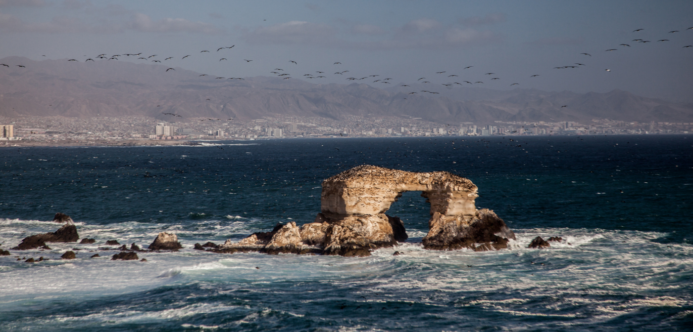

Según los especialistas, nuestro país ocupa el tercer lugar de los países con más avistamientos de ovnis. Ese caso se dio hace una semana cuando por las redes sociales se consignó que un objeto volador no identificado se observaba en el sector sur de Iquique Glorioso.
En un video enviado por una lectora de www.elsoldeiquique.cl se observa un objeto que surca los cielos del puerto heroico.
La grabación corresponde al atardecer del miércoles 12 de noviembre del 2014. El video dura solo 17 segundos, pero se puede ver claramente en el sector superior izquierdo un ovni.
Otro hecho que ha marcado a la ufología en Chile, ocurrió en la madrugada de mayo del 2018, sobre los cielos de Antofagasta la tripulación de seis aviones comerciales divisaron simultáneamente tres fuentes luminosas triangulares. Los audios oficiales de los pilotos fueron publicados y generaron gran revuelo en la opinión pública por la confusión que esas luces causaron en los pilotos. Los especialistas de la CEFAA aseguran que pudo haberse tratado de aviones militares haciendo maniobras secretas o embarcaciones que reflejaban sus luces. Sin embargo, al tratarse de pilotos profesionales que toman la ruta aérea a diario es difícil entender cómo nunca antes se habían visto enfrentados a una situación similar. Este ha sido el caso más reciente y público de un OVNI que no ha podido ser explicado.
Sin embargo, el hecho más famoso fue el llamado “Roswell chileno” de 1998. Según contaron varios testigos, un OVNI se estrelló en el cerro Las Mollacas, en la misma localidad cercana a Coquimbo, fenómeno que movió incluso al ejército chileno y enviados especiales de la NASA que solicitaron no publicar mayores antecedentes del caso.
El tercer lugar recomendado para este tipo de avistamientos es el enigmático Valle del Elqui. Además de ser famoso por ser un centro espiritual que invita a renacer y a sanarse, se dice que entre sus montañas se esconde un portal a otra dimensión. Este Valle y sus alrededores han sido testigos de extraños sucesos como la caída de un objeto desconocido en las montañas de Vicuña en el año 2013, que decenas de personas testimoniaron haberlo visto zigzaguear en el cielo antes de estrellarse en una montaña. Otro caso que se recuerda es el de la ciudad de Paihuano, cuando en el año 2008, mientras la presidenta de la República dictaba un discurso en un liceo de la localidad, los asistentes avistaron un OVNI que fue inmortalizado por varios asistentes.